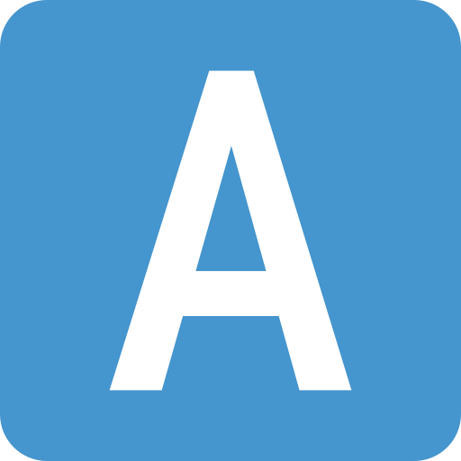

Projects
 Be Happy
Be Happy
This is a real milestone for me. It represents my first published software and my first self-made money.
It was a collection of funny jokes, with customizable interface and various features like "Shake to Random".
It has been published on the App Store on July, 15th 2010. Unfortunately it's no longer available.
 Special Sentences
Special Sentences
My second app on the App Store. It was a utility to write special characters like mathematical symbols (±, ∀, ∞),
technical symbols (⇪, ⏏︎, ⌫) and so on.
It has been published on the App Store on June, 30th 2012. Unfortunately it's no longer available.
Eurochiller
In 2013 I worked with Eurochiller to develop a catalog of their products. The app was available on both iPhone and
iPad.
Atom
In 2017 I collaborated with Atom to develop a REST server and a responsive website. The goal was to make some
corporate data available via mobile devices.
crecord
crecord is a command line utility meant to record video streams from security IP cameras. However, you can use it to
record any kind of video stream from the web.
Source code is available here.

Personal Website
I’ve always wanted a personal website and now I finally have one.
This site is built from the ground up with plain HTML, CSS, and JavaScript.
It’s fully responsive and automatically adapts to your system’s light or
dark
mode preferences.
Updates are fully automated: GitHub Actions build
the site into a Docker image and publishes it to the GitHub Container Registry (GHCR).
The image is then deployed to a VPS,
where it runs behind a reverse proxy to ensure fast and secure access.
img2pdf4bot
This is my Telegram Bot. It's currently live and can be tried by anyone @img2pdf4bot.
Source code can be found here.
It can create PDFs from your pictures losslessly.